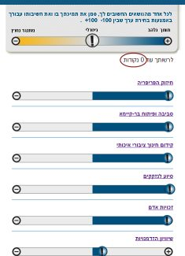
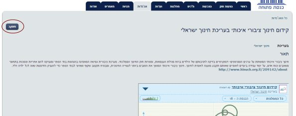

בחירומטר 2015: שאלות ותשובות
מהו כלי הבחירומטר?
כלי הבחירומטר הינו תוצר פיתוח משותף של תנועת "מתפקדים" ועמותת "הסדנא לידע ציבורי", והוא נועד לאפשר למתפקדים ולאזרחים להכיר מקרוב את הפעילות הפרלמנטרית של מפלגות וחברי כנסת על בסיס ניתוח הצבעות המפלגות, חברי הכנסת והצהרות המתמודדים החדשים לכנסת, תוך התאמה בין השקפותיו של המשתמש לאלו של המתמודדים. הכלי מבוסס על מערכת האג'נדות של אתר "כנסת פתוחה".
מה זה תנועת "מתפקדים"?
"מתפקדים", www.mitpakdim.co.il, ("מתפקדים" בפייסבוק), היא
תנועה רב-מפלגתית שמטרתה להביא לשינוי התרבות הפוליטית בישראל, אשר בה ציבור רחב החי בישראל מדיר עצמו מהעיסוק בדבר הכי בסיסי בדמוקרטיה, בחירת נציגיו. "מתפקדים"
הוקמה בשנת 2011 על ידי קבוצה של צעירים, פעילים פוליטיים וחברתיים.
על פי הנתונים הזמינים לנו כיום, 36.1% מבעלי זכות הבחירה בישראל לא הצביעו בבחירות האחרונות. רק כ- 2% מבעלי זכות הבחירה בישראל בחרו בפריימריז 68 חברי כנסת
במפלגות קדימה, ליכוד ועבודה, כולל ראש ממשלת ישראל, יושב ראש האופוזיציה, שרי הביטחון, האוצר ועוד מרבית תפקידי המפתח בכנסת ובממשלה. שאר האזרחים, שבחרו שלא לממש
את זכותם הפקירו את המערכת הפוליטית בידי קבוצות קיצון, קבוצות אינטרס קטנות אשר מנצלות את השיטה הקיימת לטובתן.
"מתפקדים" לקחה על עצמה להגדיל את מספר האזרחים הישראלים המעורבים בדמוקרטיה הישראלית ,חברים במפלגות (מתפקדים) ומשתתפים במערכות הבחירות במדינת ישראל הן הפנים
מפלגתיות (פריימריס) והן הבחירות הארציות לכנסת ולרשויות המקומיות.
בעקבות פעילותה של התנועה אלפי צעירים התפקדו והפכו לאזרחים פעילים בדמוקרטיה הישראלית. כמו כן, קמו מס' ארגונים הקוראים להתפקדות במסגרות שונות. באחרונה,
דורגה "מתפקדים" במקום 79 ברשימת 100 המשפיעים של מגזין TheMarker.
מה זה "הסדנא לידע ציבורי" ו"כנסת פתוחה"?
הסדנא לידע ציבורי היא עמותה אשר פועלת להגברת השקיפות במגזר הציבורי ועידוד השתתפות ציבורית תוך פיתוח טכנולוגיות לבחירה מושכלת. פרויקט הדגל של הסדנא
הוא אתר "כנסת פתוחה". האתר אוסף בצורה אוטומטית נתונים רבים מהאתר הרשמי של הכנסת ומציג אותם בצורה נוחה וברורה למשתמש. לדוגמה: דף פרופיל של ח"כ, שהותם
בכנסת, השתתפותם בהצבעות, חברותם בוועדות, אופן ההצבעה שלהם ועוד. האתר נועד לספק נתונים אובייקטיבים אותם ניתן לנתח, ולאפשר דיון מושכל של גורמים מקצועיים
ואזרחים מן השורה בנושאים המונחים על שולחן המחוקק.
לסדנא לידע ציבורי פרויקטים נוספים כדוגמת: התקציב הפתוח, מעקב אחר דו"ח ועדת טרכטנברג, ועוד.
איך נקבע הדירוג של של המפלגות ב'בחירומטר'?
לכל מפלגה המתמודדת בבחירות לכנסת ה-19 ואשר היתה פעילה בכנסת הנוכחית או לפניה, יש ציון התאמה לכל אחת מהאג'נדות באתר "כנסת פתוחה" (ראו בהמשך עוד על קביעת ציון זה). לפי העדפות המשתמש שנבחרו, כלי המדח"כ מחשב ציון משוקלל לכל מתמודד, כך שמתמודדים שתואמים להעדפות המשתמש מקבלים ציון גבוה יותר, בעוד שמתמודדים שדעותיהם והצבעותיהם נוגדים את העדפותיו של המשתמש מקבלים ציון שלילי. כלי המדח"כ מציג את רשימת כל המתמודדים, ממויינים לפי הציון המשוקלל שנקבע להם על פי ההעדפות שבחר המשתמש.
מהי אג'נדה באתר כנסת פתוחה?
אג'נדה היא השקפת העולם הסובייקטיבית של עורך האג'נדה. כל עורך אג'נדה הינו בעל חזון בנוגע לאופן בו צריך לפעול בנוגע לתחום מסוים בישראל. חלק מעורכי האג'נדות הם אנשים הבקיאים מאוד בתחומם, והם מעוניינים להציג ולקדם את השקפת עולמם, על-ידי בחינה והשפעה על החקיקה הרלוונטית בכנסת.
איך הם (עורכי האג'נדות) עושים את זה?
עורכי האג'נדות שואבים את המידע מאתר כנסת פתוחה ומדרגים את הצעות החוק שעולים בכנסת על פי שני מאפיינים:
- בעד ונגד - האם לדעתם יש להצביע בעד או נגד החוק;
- חשיבות - רמת חשיבות החוק ביחס לאג'נדה. כלומר, האם החוק הינו חוק הקשור באופן הדוק לקידום/עיכוב האג'נדה הנבחרת או שהקשר לאג'נדה הוא חלקי.
למעשה, עורכי האג'נדות, נותנים פרשנות להשלכות האפשריות של החלת/ אי-החלת החוק ומציינים איזו אפשרות מקדמת את האג'נדה שלהם, עד כמה וכיצד.
כשחבר כנסת מצביע על הצעת חוק, הוא מקבל אוטומטית ציון חיובי או שלילי ביחס למדד האג'נדה. לדוגמה: אם עורכי האג'נדה דירגו הצעת חוק כבעלת "חשיבות רבה מאוד" וציינו כי לדעתם יש להתנגד לחוק ("התנגדות מלאה"), אז ח"כ שהצביע בעד החוק יקבל ציון שלילי מאוד במדד האג'נדה, כיוון שהוא הצביע בניגוד לדעתם של עורכי האג'נדה בחוק שהוא מאוד חשוב לדעתם.
כך, בעזרת האג'נדות, העורכים מנגישים לאזרח את הפעילות הפרלמנטרית בכנסת, בעודה מתרחשת, בכדי לתת לציבור הזדמנות להשפיע עליה.
אזרחים, אשר אג'נדה מסוימת חשובה להם, יכולים להצטרף ולעקוב אחר האג'נדה ואחרי הדירוגים לחוקים והצעות חוק שביצעו עורכי האג'נדה וכך גם לראות עד כמה פעילותו של כל ח"כ וח"כית בכנסת, מקדמים או מעכבים את האג'נדה.
להרחבה נוספת ראו גם : http://hamishmar.org.il/?page_id=8202
אבל האג'נדה משקפת דעות, לא עובדות. למה שאני אאמין לזה?
באתר "כנסת פתוחה",עבור כל דף אג'נדה מוצג פירוט הנוגע לה: מי העורך/עורכים, תחת איזה גוף/עמותה/ארגון הם פועלים ובנוסף מספר מילים המציגות את השקפת עולמם, או במילים אחרות - את האג'נדה אותה הם מנסים לקדם.
אנו ממליצים לקרוא את תיאור האג'נדה המוצגת, לגלוש לאתר הגוף/עמותה/ארגון במידה
ויש, ולהחליט בעצמכם האם אתם תומכים באג'נדה המוצגת, מתנגדים אליה לחלוטין, או שפשוט אין לכם דעה בנושא זה.
האג'נדה היא דעה ואתם רק צריכים להחליט מה דעתכם בנוגע לדעה הזאת.
לפי החלטתכם, תדעו אם לתת ציון חיובי או שלילי לאג'נדה בדירוג האישי שלכם בכלי האג'נדות, או להשאיר את הדירוג ניטרלי.
ומה עם חברי כנסת שהם גם שרים?
אתר "כנסת פתוחה" עוקב אחר הפעילות הפרלמנטרית בכנסת.
ברור כי ישנן אג'נדות אותן ניתן לקדם במסגרת פעילות הממשלה בנוסף, או אפילו במקום, במסגרת החקיקה בכנסת. עם זאת, כלי זה נועד למדוד רק את הפעילות הפרלמנטרית של נבחרי הציבור ולא פעילות באפיקי השפעה אחרים.
לטעמנו, ח"כים שהם גם שרים, במידה והם תומכים באג'נדה מסויימת ראוי שיפעלו גם במישור התחיקתי במקביל לפעילותם בממשלה, ואם הם אינם מסוגלים לכך, יתכן כי ראוי לקיים דיון ציבורי בשאלה אודות האפקטיביות של ח"כים שהם גם שרים במסגרת תפקידם כח"כים...
ומה עם המפלגות החדשות? הרי אי-אפשר לשקף את הפעילות שלהם בפועל...
נכון, בניגוד למפלגות מכהנות, עבור מפלגות חדשות לא ניתן לשקף את פעילותן בפועל בכנסת מכיוון שהם עוד לא הגיעו אליה... דירוג המפלגות החדשות המוצג במערכת משקף את הצהרותיהם בלבד, ולכן הם מוצגים בדירוג נפרד מזה של המפלגות שכיהנו בכנסת האחרונה. היתרון, שהדירוג מאפשר לדעת בפירוט רב יותר מבעבר מה הם מצהירים שיעשו במידה וייבחרו לכנסת.
חשוב לציין שהדרך שבה המפלגות מצהירות דרך אתר מיוחד על הפעילות שלהם דומה לפעילות המשתמשים שמשנים את המשקולות שלהם אבל במגבלה אחת חשובה, יש להם מספר מוגבל של 500 נקודות לתהליך השינוי של משקולות האג'נדות. כמו שרואים בתמונה זה מספיק לבחירה מלאה ב-5 אג'נדות ועשירית בלבד מתוך לפחות 32 אג'נדות! המגבלה מכריחה אותם לבחור בין האג'נדות החשובות להן ולמתפקדים להכיר אותם טוב יותר.

ולאורך פעילות הכנסת ועד לבחירות הבאות - נראה עד כמה הם עמדו בהבטחותיהם.... :)
איך נקבע הסדר של האג'נדות בתצוגה ואיך ניתן להשפיע עליו?
הסדר נקבע לפי מספר העוקבים אחר כל אג'נדה באתר כנסת פתוחה המספר חשוף בדף וכל אחד יכול להירשם למעקב אחר כל אג'נדה, למשל באג'נדה של
חינוך ישראלי
ניתן להיכנס לדף האג'נדה וללחוץ על כפתור המעקב בדף שמאל למעלה כמו שנראה בתמונה:

כך תקבלו לדוא"ל עדכונים רלוונטיים וגם תקדמו את האג'נדה שחשובה לכם ברשימה.
אני נציג של מפלגה חדשה שרוצה להירשם, מה לעשות?
לשלוח דוא"ל לכאן:
primaries@mitpakdim.co.il.
התלהבתי ואני רוצה לקדם את אחת המפלגות, מה לעשות?
לשנות את המשקולות כך שיתאימו לבחירה של המפלגה ואז ללחוץ על כפתור השיתוף לטוויטר (ללא סיום התהליך) להעתיק את כל הקישור שמתקבל.
הקישור שנוצר ידרג (בסבירות גבוהה) את המפלגה (בין אם הוא חדשה או ותיקה) במקום ראשון לכל מי שיפתח את הקישור הנ"ל וכך ניתן לשלוח אותו ברשימות תפוצה ובפרסומות.
אני מתפקד שרוצה להשפיע בעוד דרכים, מה ניתן לעשות?
לעקוב אחר אג'נדות, להצביע על חוקים בכנסת פתוחה כמתפקד, להתנדב (לארגון מתפקדים ו\או ל סדנא לידע ציבורי).
האם יש כתבות על האתר?כמה אנשים משתמשים באתר?
כבר עכשיו התפרסמו על המדח"כ (גירסה קודמת של הבחירומטר) מספר כתבות אוהדות:
- ynet
- מיזבלה
- feeder
- ליכודניק
יש לי עוד שאלות ונושאים שהייתי רוצה לדון עליהם, איך עושים את זה?
נרשמים לקבוצת גוגל כאן:
https://groups.google.com/forum/#!forum/openprimaries
או שולחים דוא"ל אישי לכאן:
primaries@mitpakdim.co.il